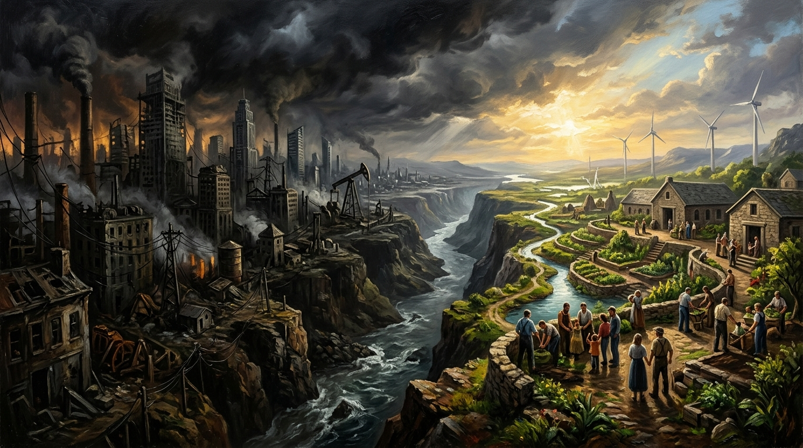

How the World Fucked Itself and How a Fucked World Could Be Unfucked
A Blistering Forensic Manifesto on the Neoliberal Fracture, Algorithmic Toxicity, Wealth Concentration, and the Systemic Blueprint for Regeneration.

“The Unfucking”
This essay was adapted directly into a heavy industrial blues-rock anthem produced in collaboration between The Shady River Bard and Trevor Swistchew. It channels the raw outrage and regenerative blueprint of the text into soaring electric riffs and defiant vocals.

Systemic Audit: The Mechanics of Collapse & Regeneration
Empirical data from the World Inequality Lab, IMF global subsidy audits, and peer-reviewed political economy on market concentration.
From Social Contract to Financialised Enclosure
The essay identifies the surrender of state authority to market primacy as the foundational pivot. Over four decades of market fundamentalism transformed public goods into speculative capital and broke the mechanisms of collective bargaining.
The world fucked itself the moment it decided that money mattered more than people. That was the hinge. Everything else was fallout. When governments surrendered power to markets, when corporations became more powerful than states, when public goods were carved up and sold off, when unions were broken and wages were frozen, when communities were stripped of industry and left with nothing but call centres and despair — the world set itself on a path that could only end in rage. That rage didn’t stay quiet. It fermented. It curdled. It became the fuel for every extremist movement now crawling across the planet.
The world fucked itself when truth became optional. When facts became negotiable. When news became entertainment. When algorithms learned that outrage was profitable and fed it back to people until they were drowning in it. When lies travelled faster than reality. When conspiracy became a substitute for meaning. When politics became a performance instead of a responsibility. When leaders discovered that fear was easier to sell than hope. That was the moment democracy began to rot from the inside.
“The world fucked itself the moment it decided that money mattered more than people. That was the hinge. Everything else was fallout.”
The world fucked itself when climate collapse was treated as a distant rumour instead of a present emergency. When governments pretended that infinite growth was possible on a finite planet. When corporations poisoned land, air, and water and called it progress. When the rich built bunkers and the poor were told to recycle. When droughts, fires, floods, and storms became normal and still nothing changed. When the people who caused the crisis were the same people who profited from pretending it didn’t exist.
The world fucked itself when inequality became so vast that it stopped being a statistic and became a prison. When billionaires hoarded wealth that could have fed nations. When ordinary people worked harder and earned less. When housing became a luxury. When healthcare became a privilege. When education became debt. When the young realised they would never own anything. When the old realised everything they fought for had been stolen. When the middle class evaporated. When the working class was told it didn’t exist.
The world fucked itself when politics became a game played by people who never paid the price for losing. When leaders lied and kept lying. When corruption became normal. When public trust collapsed. When people looked at their governments and saw nothing but incompetence, arrogance, and contempt. When the far right stepped into the vacuum and offered simple answers to complex problems. When those answers were poison but tasted like clarity. When people voted for anger because anger was the only thing that felt real.
That is how the world fucked itself. Not through fate. Not through destiny. Through choices. Through cowardice. Through greed. Through neglect.
Now the second part. How a fucked world could be unfucked. Not magically. Not easily. Not quickly. But realistically.
The world can be unfucked only by reversing the conditions that broke it. That means power must be taken back from the places where it concentrated. Governments must stop serving markets and start serving people. Wealth must be redistributed downward instead of upward. Public goods must be rebuilt. Healthcare, housing, education, transport, energy — all must be treated as rights, not commodities. Work must be dignified. Wages must be enough to live on. Unions must be restored. Communities must be rebuilt around real industry, not gig economy scraps.
The world can be unfucked only if truth becomes non‑negotiable again. That means regulating the digital platforms that profit from chaos. It means transparency in algorithms. It means accountability for misinformation. It means rebuilding journalism as a public service instead of a corporate product. It means teaching people how to recognise manipulation instead of drowning them in it.
“The world can be unfucked only if people stop being treated as consumers and start being treated as citizens... The world fucked itself through systems. The world can only be unfucked through systems.”
The world can be unfucked only if climate reality is treated as the central organising principle of civilisation. That means ending fossil‑fuel dependence. That means massive investment in renewable energy. That means protecting ecosystems instead of destroying them. That means preparing for the disasters already locked in. That means treating climate justice as economic justice, because they are the same thing.
The world can be unfucked only if inequality is crushed. Not reduced. Crushed. That means taxing extreme wealth. That means closing loopholes. That means ending offshore havens. That means ensuring that no billionaire exists while poverty does. That means shifting power from capital to labour. That means making sure that the people who create value are the ones who benefit from it.
The world can be unfucked only if democracy is rebuilt from the ground up. That means ending corruption. That means removing corporate influence from politics. That means decentralising power. That means giving communities control over their own futures. That means creating systems that cannot be captured by extremists or oligarchs. That means making politics something people participate in, not something done to them.
The world can be unfucked only if people stop being treated as consumers and start being treated as citizens. That means belonging. That means solidarity. That means recognising that the problems of one group are the problems of all. The world fucked itself through systems. The world can only be unfucked through systems.